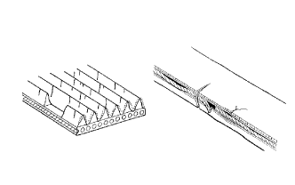
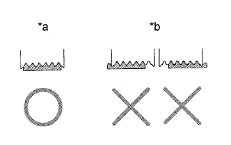

DRIVE BELT > ON-VEHICLE INSPECTION |
| 1. INSPECT FAN AND GENERATOR V BELT |
|  |
Check the belt for wear, cracks or other signs of damage.
If any of the following defects is found, replace the fan and generator V belt.
|  |
Check that the belt fits properly in the ribbed grooves.
| *a | CORRECT |
| *b | INCORRECT |
| 2. INSPECT V-RIBBED BELT TENSIONER ASSEMBLY |
Check that nothing gets caught in the tensioner by turning it clockwise and counterclockwise.
If the result is not as specified, replace the V-ribbed belt tensioner assembly.